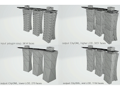
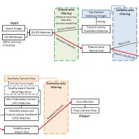
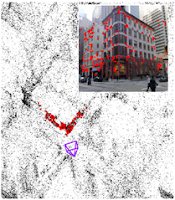
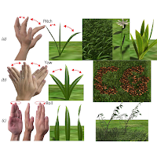
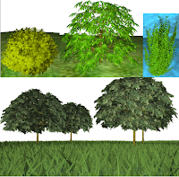
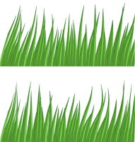
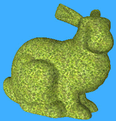
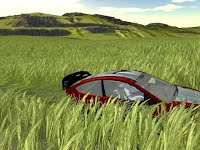

|  |
Kan Chen, Henry Johan, Marius Erdt.
"Appearance-Driven Conversion of Polygon Soup Building Models with Level of Detail Control for 3D Geospatial Applications."
Advanced Engineering Informatics (ADVEI), Volume 28, pages 101049, 2020.
|
|
Kan Chen, Eugene Lee.
"A Two-Point Map-Based Interface for Architectural Walkthrough."
IEEE International Symposium on Mixed and Augmented Reality (ISMAR), 2019. (Poster).
|
|
|  |
Wentao Cheng^, Weisi Lin, Kan Chen, Xinfeng Zhang.
"Cascaded Parallel Filtering for Memory Efficient Image-based Localization."
IEEE International Conference on Computer Vision (ICCV), pages 1032-1041, 2019.
|
|  |
Wentao Cheng^, Kan Chen, Weisi Lin, Michael Goesele, Xinfeng Zhang, Yabin Zhang.
"Two-stage Outlier Filtering Framework for City-Scale Localization using 3D SfM Point Clouds."
IEEE Transactions on Image Processing (TIP), Volume 28, No. 10, pages 4857-4869, 2019.
|
|  |
Kan Chen, Henry Johan.
"Interactive authoring of bending and twisting motions of short plants using hand gestures."
Computer Animation and Virtual Worlds (CAVW), Volume 28, Issue 6, 2017.
|
|  |
Kan Chen, Henry Johan.
"Animating 3D Vegetation in Real-time Using a 2D Approach."
ACM Symposium on Interactive 3D Graphics and Games (I3D), pages 69-76, 2015.
|
|  |
Kan Chen, Henry Johan.
"A Simple Method to Animate Vegetation in Images Using Simulation-guided Grid-based Warping."
International Conference on Computer-Aided Design and Computer Graphics (CAD/Graphics) pages 244-251, 2013.
|
|  |
Kan Chen, Henry Johan, Wolfgang Mueller-Wittig.
"Simple and Efficient Example-based Texture Synthesis Using Tiling and Deformation."
ACM Symposium on Interactive 3D Graphics and Games (I3D), pages 145-152, 2013.
|
|  |
Kan Chen, Henry Johan.
"Real-time Continuum Grass."
IEEE Virtual Reality (VR), pages 227-234, 2010. (Long paper, acceptance rate: 19%)
Kan Chen, Henry Johan. "Real-time Continuum Grass." ACM Symposium on Interactive 3D Graphics and Games (I3D), 2009. (Poster) |